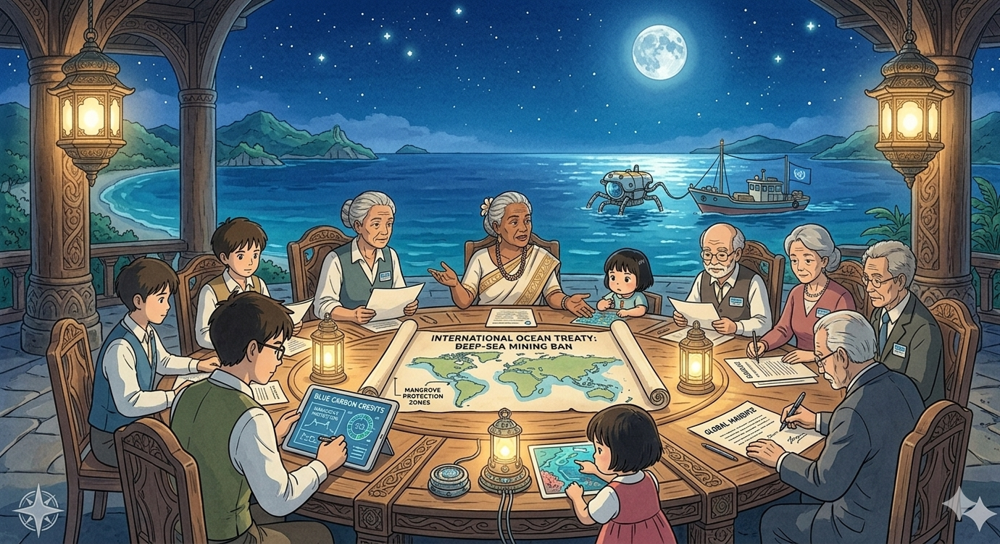
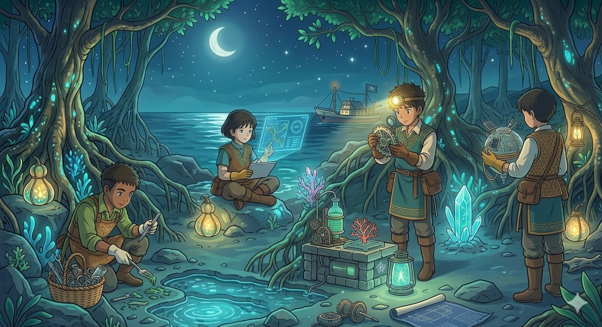

Volunteer
Answering the ocean call starts with direct action. From moonlit beach cleanups that remove "ghost" plastic to citizen science projects tracking reef health, volunteers act as the first line of defense. By rescuing wildlife or managing invasive species, you move beyond just listening to the warnings and become a physical force for restoration.

Student Actions
Students represent the intellectual spark needed to decode the ocean is complex echoes. By leading campus plastic free initiatives and conducting localized research, young advocates turn passion into documented evidence. These actions prove that the next generation is ready to rewrite the future of our waters through creative science and organized clubs.

Campaigns
Campaigns serve as a megaphone for the ocean in silent messages, turning individual concern into collective power. By advocating for plastic bans and marine protected areas, we ensure these warnings reach policymakers. Whether through public education or promoting sustainable seafood, these initiatives ensure the sea is voice is no longer ignored.

Global Policy
Policy shifts create the legal framework that allows the ocean's voice to be heard in the halls of power. By pushing for international treaties that regulate deep sea mining and advocating for "Blue Carbon" credits, global strategists turn environmental necessity into binding law. These efforts ensure that the protection of our waters is not just a local preference, but a global mandate that holds industries and nations accountable for the health of the high seas.

Innovation & Tech
Innovators provide the tools to translate the ocean in silent distress into actionable data. By developing low-cost sensors to monitor acidification or engineering biodegradable alternatives to single use plastics, tech driven minds bridge the gap between problem and solution. These actions demonstrate that human ingenuity can be recalibrated to serve the sea, turning the tide through sustainable design and smart engineering.

Community
Community projects are the heartbeat of long term healing, blending local tradition with environmental science. By restoring vital mangrove "cradles" and seagrass meadows, coastal communities build natural shields against warming tides. These collaborative efforts prove that when we listen to the ocean together, we can create a sustainable harmony between people and the sea.